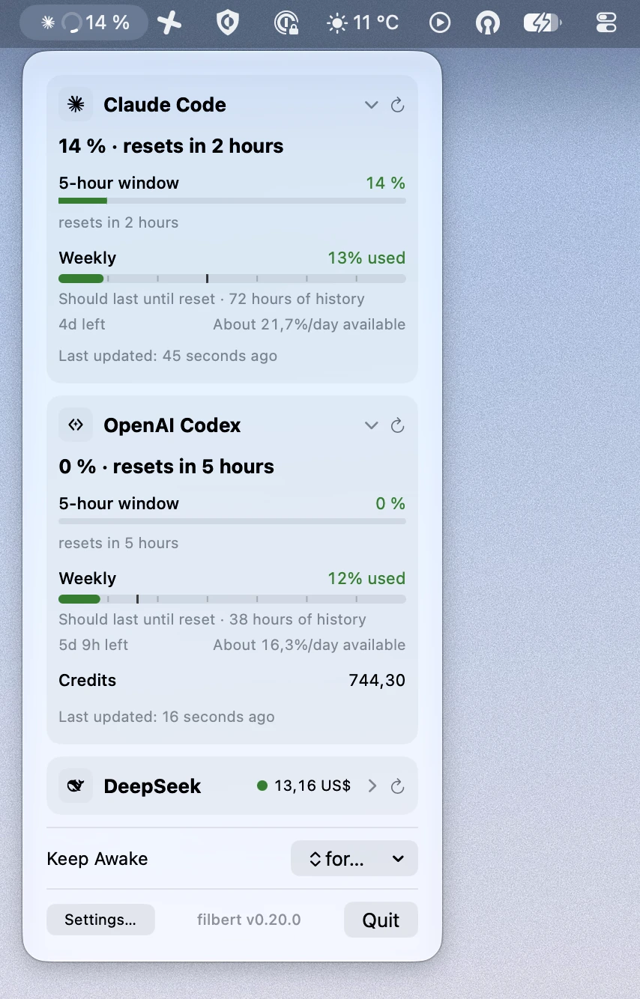
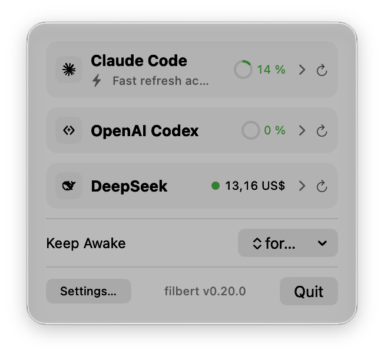
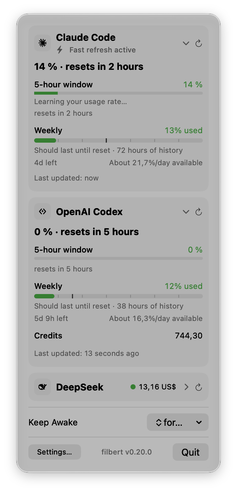
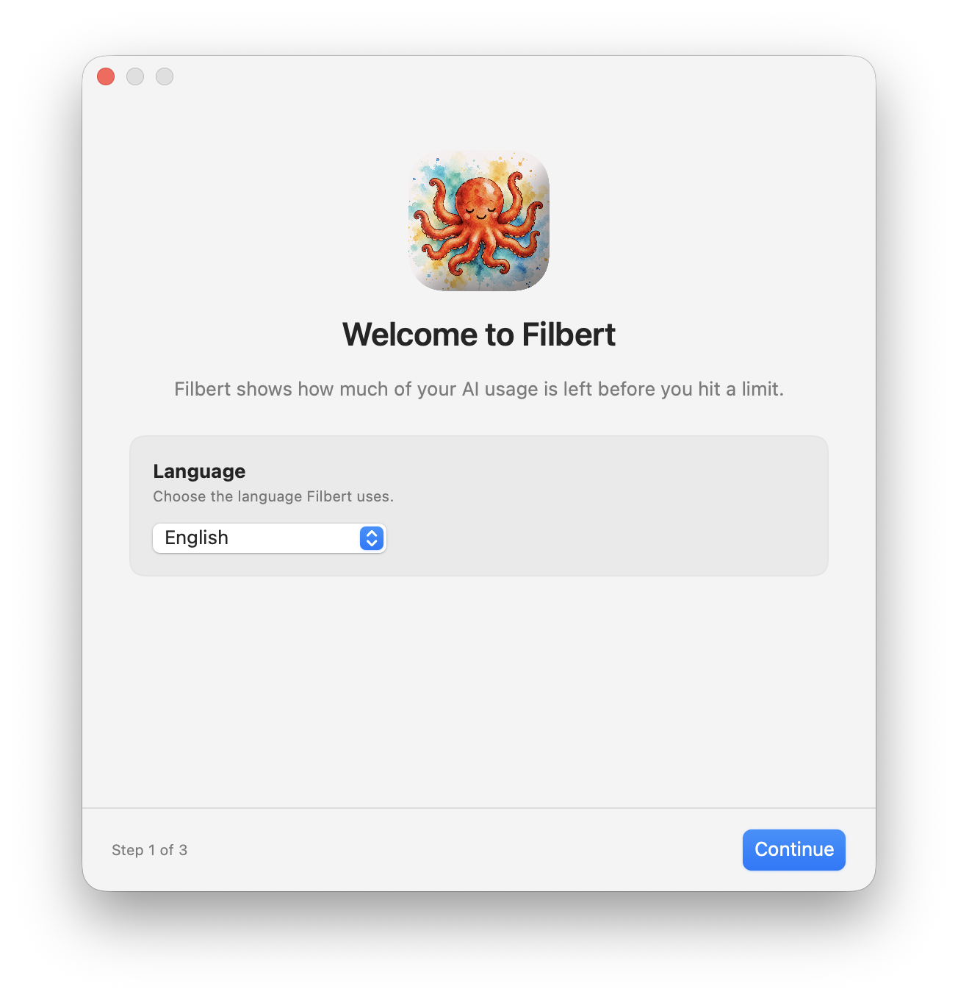

AI usage tracker for the macOS menu bar
Filbert
Filbert shows how much of your AI usage is left before you hit a limit.
Free and open source · Apple Silicon · macOS 14 or newer, best on Tahoe

Every limit, one click away
Coding plans, API balances, and subscriptions each keep their own limits. Filbert puts them all in one place.
-
Glance at the menu bar
The menu bar shows what is left for the provider you are using right now.
-
See every provider
Click the icon to see usage, limits, and reset times for all of your providers.
-
Know when it runs out
At your current pace, Filbert tells you if an allowance should last until it resets, or when it runs out.
-
Smart usage checks
Turn it on and Filbert checks more often while your usage changes and slows down when it does not. It always respects provider rate limits.
-
Keep Mac Awake
Keep your Mac awake for a set time, or until you turn it off. Useful while a long agent run finishes.
-
Speaks your language
English, German, Spanish, Portuguese, Russian, Simplified and Traditional Chinese, and Japanese.
Small panel, all the details
Collapse providers for a quick look, or expand one to see each limit and when it resets.


Works with the tools you use
Add only the providers you use. Filbert reads an API key or the sign-in of a tool you already have.
- Claude Code Plan usage
- OpenAI Codex Subscription usage
- Cursor Subscription and on-demand spend
- Gemini CLI Model quotas
- z.ai GLM Coding Plan
- DeepSeek Prepaid balance
- OpenCode Go Go subscription
Some providers need their CLI installed and signed in. Read the setup notes.
Private by design
- Your keys stay on your Mac. Filbert keeps them in the macOS Keychain.
- No middleman. Filbert calls each provider directly over HTTPS. There is no Filbert server.
- No tracking. No telemetry, no analytics, no remote logging. This page has none either.
- Native and light. Built in Swift. No Electron, no Dock icon.
Get started in a minute
On first launch, a short welcome guides you through language, your first provider, and where to find Filbert.

-
Download
Get the DMG. Every release is signed with a Developer ID and notarized by Apple.
-
Install
Open the DMG and drag Filbert to Applications.
-
Connect a provider
Open Filbert. The welcome window helps you add your first provider. After that, Filbert lives in your menu bar.
Filbert updates itself when a new version is out.
Using Homebrew? Run brew install --cask victorhqc/tap/filbert